是无理数，这意味着
是无理数，这意味着5．第五篇：比例论
根据欧多克索斯的工作而写的这第五篇，被人认为是欧几里得几何的最大成就；同《原本》任何其他部分相比，它的内容被人讨论得最多，它的意义被人争论得最激烈。毕达哥拉斯派据说也有关于比例（两个比相等的关系）的理论，即关于可公度量（其比可用整数比表示的那种量）的比例理论。虽然我们不知道这一理论的细节，但据说就是以后将要讲的第七篇中的内容，并据说曾用之于有关相似三角形的命题。在欧多克索斯以前应用比例关系的数学家，一般在用不可公度量时没有可靠的理论根据。第五篇把比例关系的理论推广到不可公度量而避免了无理数。
量这个概念原是被人作为包括可公度或不可公度的数量或实体的。如长、面积、体积、角、重量和时间都是量。长和面积是早就出现的，例如在第二篇中。但迄今为止欧几里得还没有机会讨论别种量或讨论量的比和比例。所以在这以前他没有引入量的一般性概念。现在这一篇里他特别要强调任何一种量的比。
尽管在这一篇里定义占重要地位，但没有真正提到关于量的定义。欧几里得开头是这样写的：
定义1．当一较小的量能够量尽较大的量时，它是较大量的部分。
这里所谓部分是指若干分之一，例如2是6的若干分之一，而4则不是6的若干分之一。
定义2．当较大量能被较小者量尽时，它是较小者的倍量。
这里所谓倍量是指整数倍量。
定义3．比是同类量在大小方面的一种关系。
这第三个定义的意义很难同下一定义分开来讲。
定义4．若能把两量中任一量倍增后超过另一量，便说此两量有一个比。
这定义的意思是说，量a和b有一个比，如果a的某个整数（包括1）倍超过b且b的某个整数（包括1）倍超过a的话。这定义排除往后要出现的概念，即那并非0的无穷小量。如若两量中有一量小到不能使其有限倍超过另一量，那么根据欧几里得这个定义是不许它们之间有一个比的。这定义也排除无穷大量，因那时取较小量的任何有限倍都不会超过那个较大量的。下一个定义是关键性的定义。
定义5．四个量形成第一个量与第二个量之比以及第三个量与第四个量之比。我们说这两个比是相同的，如果取第一、第三两个量的任何相同的倍数，取第二、第四两个量的任何相同的［另一个］倍数后，从头两个量的倍数之间的小于、等于或大于的关系，便有后两个量的倍数之间的相应关系。
定义里说的是，我们有
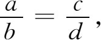
如果a及c都乘以任一整数m，b及d都乘以任一整数n后，对于所有这样选取的m及n，
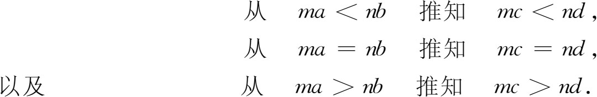
我们用现代的数来说明这定义的意思。为检验
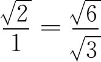
这关系是否成立，我们应该（至少从理论上说）查明，对于任何整数m和另一任何整数n，是否能
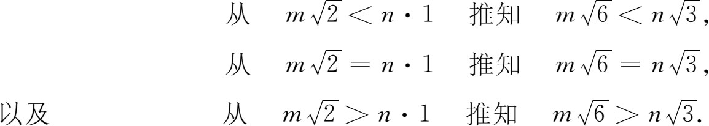
当然在眼前这个例子里相等的情况不会出现，因m和n是整数，而是无理数，这意味着
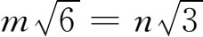
不会出现。定义只是说如果左边三种可能情况之一出现，那么右边的相应情况必然出现。定义5的另一种说法是，使ma＜nb的整数m和n，同使m′c＜n′d的整数m′和n′是一样的。读者可能马上想知道欧几里得拿上面这个定义干什么用。当我们要证“若a/b＝c/d，则（a＋b）/b＝（c＋d）/d”时，我们是把这里的比和比例都看作数的（即使比是不可公度的），然后用代数来证明这个结果。我们知道无理数也可按代数法则进行运算。但欧几里得不能这样做也没有这样做。在那个时候希腊人还没有证明对不可公度量的比能够加以运算；因此欧几里得就要用他所给出的那些定义特别是定义5来证明这个定理。事实上，他这些定义是为了给量的代数打下基础。
定义6．有相同比的量称为成比例的量。
定义7．四个量的第一个量和第三个量取相同倍数，其第二个量和第四个量又取另一相同的倍数时，若第一个倍数量大于第二个倍数量而第三个倍数量却并不大于第四个倍数量，则说第一量与第二量之比大于第三量与第四量之比。
定义说的是，只要有那么一个m和那么一个n，能使ma＞nb而mc却并不大于nd，则a/b＞c/d。因此，对于给定的一个不可公度比a/b，我们是可以把它放在所有别的这类比（就是说那些小于它和大于它的比）之间的。
定义8．一个比例至少要有三项。
在只有三项的情形下是a/b＝b/c。
定义9．当三个量成比例时，我们说第一量与第三量之比是第一量与第二量的二次比。
例如，若A/B＝B/C，则A与C之比是A与B的二次比。这意思是说A/C＝A2/B2 ，因A＝B2/C，故有A/C＝B2/C2＝A2/B2。
定义10．当四个量成连比例时，我们说第一量与第四量之比是第一量与第二量的三次比，其余不管有几个量的连比都依次类推。
例如，若A/B＝B/C＝C/D，则A与D之比是A与B的三次比。这就是说A/D＝A3/B3，因为A＝B2/C，所以A/D＝B2/CD＝（B2/C2）（C/D）＝A3/B3。
定义11到18规定相应的一些量：更比、逆比、合比、分比、换比等。这些指的是从a/b形成的（a＋b）/b，（a-b）/b以及其他的比。
第五篇接着就证明关于量和量之比的25个定理。证明是用文字叙述的，并且只根据定义和公理（如等量减等量其差相等）。公设没有用到。欧几里得用线段来说明量，以帮助读者理解定理和证明的意义，但这些定理是适用于所有各种量的。
下面我们用近世的代数语言来叙述其中一些命题，用m，n和p表整数，用a，b和c表量。不过，为让大家看看欧几里得所用的语言，我们在第一个命题里基本上照原文译出以作示范。
命题1．任意多个量，分别是同样多个量的相同倍数，那么不管那些个别量的倍数是多少，它们总的也有那么多倍数。
用代数语言来表示，这就是
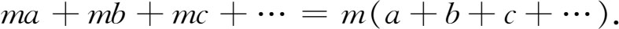
命题4．若
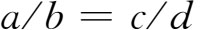
，则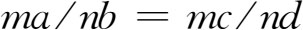
．命题11．若 ，而
，而
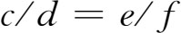
，则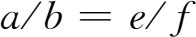
．注意，比的相等是依据比例定义而来的，所以欧几里得要细心证明相等的关系是可传递的。
命题12．若
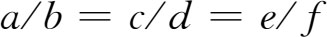
，则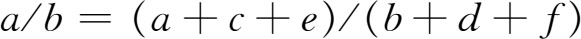
．命题17．若
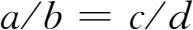
，则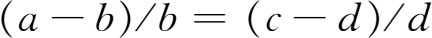
．命题18．若 ，则
，则
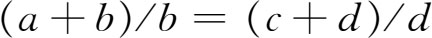
．有些命题似乎同第二篇中的命题重复。但该篇中的那些命题只是对线段陈述并予以证明，而第五篇则给出对所有各类量都适用的理论。
第五篇对其后数学发展的历史有重大关系。古典希腊人不引用无理数，部分地想靠几何方法来避免它们（如同在回顾第一篇到第四篇内容时所指出的）。不过这种几何方法并没有照顾到所有各类不可公度的量，而第五篇则补足了这个欠缺，它是从量的一般理论重新开始的。这样就使处理量的全部希腊几何有了可靠的基础。但仍存在迫切需要解决的问题，即量的理论究竟能不能作为实数（当然包括无理数）理论的逻辑基础。
至于后代数学家怎样来理解欧几里得关于量的理论，那是不成问题的。他们认为这只能用于几何，从而觉得只有几何才是严格的。所以当文艺复兴时代和其后几个世纪里重又用起无理数来的时候，许多数学家就反对，因为这些数没有逻辑根据。
用批判的眼光考察第五篇的内容后，似可肯定它们是正确的。不错，欧几里得在第五篇里给出的定义和证明没有利用几何。正如前已指出的，他在讲述命题和证明时之所以利用线段只不过是出于教学上的需要。但若说欧几里得在他关于量的理论里确实提供了关于无理数的理论，那么这只能出于两种可能的理解。其一是量本身可以看作就是无理数，其二是把两量之比看成是无理数。
我们假定量本身可以看成是无理数。那么，即使不管那些按现代标准对欧几里得严格性方面的批评，仍有下面一些说不通的地方。欧几里得从未说明他所用的量或量的相等或等价指的是什么意思。此外，欧几里得所处理的并不是量本身而是量的比例关系。两量a和b只有在它们是长度时才有乘积，才能使欧几里得把乘积看成面积。于是乘积ab就不能看作是个数，因为在欧几里得书里乘积没有一般性的意义。其次，欧几里得在第五篇里证明的一些关于比例的定理，其本身实际上可（如我们在上面所做的那样）重新陈述为代数定理。但他为了证第五篇的命题18需要对三个已给量作出第四比例量，而他只能对直线段才作得出这样的量（第六篇命题12）。所以不仅他那个一般量的理论不完全（甚至就他自己在第十二篇里所作的证明而论），而且他以线段作出的证明是依靠几何的。更有甚者，欧几里得在定义3里坚持只有同类的量才能形成比。很明显，如果说量就是数，那么这种限制就毫无意义。他其后所用的量的概念都是遵照定义的，因而是同几何分不开的。另一个说不通的地方是他没有提出一个有理数系使他得以添上他的无理数理论。他的书里虽有整数之比，但只是作为比例中的比而出现，而且甚至并不把这些比看作是分数。最后一点是，他那里没有a/b和c/d的乘积，甚至当a，b，c和d都是整数时也没有这种乘积，更谈不上当它们是量的时候了。
现在我们来考察把欧几里得的两量之比理解为数的情况如何。这样，我们把不可公度比看作无理数，把可公度比看作有理数。如果这些比是数，那就至少应该能够把它们相加相乘。但我们在欧几里得的书中怎么也找不出说明
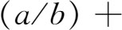
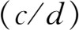
的意义之处，其中a，b，c和d都是量。在欧几里得书中，比只是作为比例的一部分而出现的，因而并无一般性的意义。最后，正如上段所指出的，欧几里得没有有理数概念可供他建立无理数的理论。因此，1800年以前数学史实际上所走的道路——完全依据几何来严格处理连续量，就成为不可避免的事。就欧几里得《原本》而论，那里并没有无理数的理论基础。